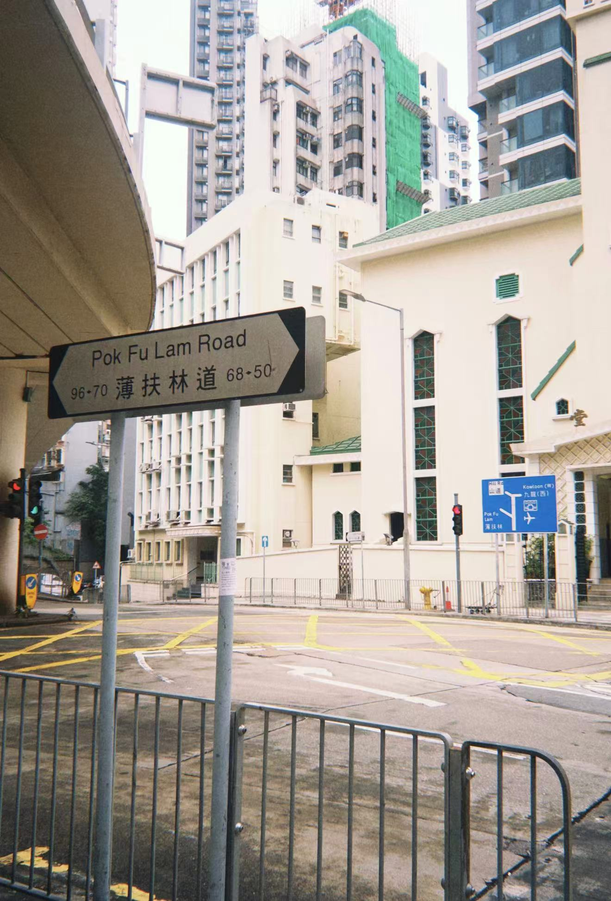

藝術地標
藝里坊
🎨 西營盤塗鴉藝術區
西營盤的塗鴉遍佈十幾棟建築，形成了一個集中的藝術區域。其中，"ARTLANE"是由中環街、奇靈里和石塘咀組成的塗鴉區，匯集了本地和國際藝術家的作品。
"鮮豔的色彩使其成為遊客和居民拍照的熱門地點。"
多樣風格：這裡的塗鴉風格各異，從色彩斑斕、充滿童趣的壁畫到反映社會問題、引人深思的作品應有盡有。
例如，一位藝術家創作了一幅以老式香港涼茶鋪為主題的大型壁畫，巧妙地將傳統與現代融合在一起。
動態更新：塗鴉文化具有很強的時間敏感性。一些作品是在藝術節期間的限時創作，之後可能會被新的塗鴉覆蓋，這為探索增添了新鮮感和不可預測性。

核心塗鴉街道與小巷

卑路乍街
作為西營盤的主幹道，卑路乍街是本地生活與街頭藝術的碰撞現場。沿街的老式唐樓外牆爬滿了大型塗鴉壁畫，從充滿市井煙火的生活場景，到大膽先鋒的創意作品，每一幅都在講述香港的故事。走在這裡，你既能感受到老街區的鬆弛日常，又能被年輕創作者的活力所感染，一步一景都是鮮活的城市切片。

薄扶林道
連接西營盤與薄扶林的這條道路，像一條藏著驚喜的藝術走廊。沿途的建築外牆、天橋立柱甚至轉角的牆面上，都藏著不期而遇的精緻塗鴉作品。沒有刻意的網紅打卡感，卻能在不經意間撞見充滿巧思的街頭創作，讓通勤路變成一場迷你的藝術漫遊，每一處細節都在打破你對香港主幹道的刻板印象。

西營盤正街
作為香港最陡的街道之一，正街是西營盤最接地氣的生活中心，也是街頭藝術的天然畫布。一邊是熱鬧的街市、老茶餐廳，飄著魚蛋和雲吞面的香氣；另一邊，色彩斑斕的塗鴉順著陡峭的坡道鋪展開來，從市井煙火到先鋒藝術無縫銜接。在這裡，你能一邊感受香港人的日常慢生活，一邊被街頭創作者的大膽色彩所震撼，新舊香港在這裡碰撞出最鮮活的火花。

高街
西營盤標誌性的高街，是復古風情與現代藝術的完美融合。維多利亞時期的歷史建築順著山勢起伏，藤蔓爬滿老式唐樓的騎樓外牆，轉角的舊商鋪招牌還保留著幾十年前的模樣。而當你抬頭，就能看到大膽前衛的塗鴉與斑駁的老牆交織，像時光與創意在對話。這裡既有老香港畫冊般的溫柔細節，又充滿文藝青年喜愛的先鋒氣息，每一處角落都值得你放慢腳步細細品味。